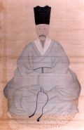

2022-2 10조
주제 선정한 이유
<구운몽> 은 전형적인 양반사회의 이상을 반영하고 있는 소설이다, 국문학사에서는 귀족문학에서 평민문학으로 넘어가는 과도기적 작품이다.현실과 꿈을 넘나드는 이 이야기 구조 속에 작가가 섬세하게 배치해놓은 다양한 상징장치들을 발견하고 해석해나가다 보면, 뜻밖에도 인간의 삶에 대한 깊은 성찰과 깨달음을 만나게 된다는 게 ‘구운몽’의 매력이다.이 작품은 인생에 대해 성찰하고, 관조하는 기회를 부여하는 작품임을 확인하였다. 인간의 통속적인 욕망을 생생하게 재현함으로써 인간의 욕망과 삶이란 어떤 것이며, 인간은 궁극적으로 무엇을 추구하며 살아가야 할 것인가에 대한 문제를 진지하게 고민하고 탐색한 작품이다. 따라서 독자들은 이 작품을 읽음으로써 자신의 삶을 성찰하고, 인생에 대해 절망하게 하는 게 아니라 희망을 가지게 된다.
| “인간 세상의 모든 현상은 꿈 같고 환각 같고 물방울 같고 그림자 같으며 이슬 같고 번개 같으니 마땅히 이와 같이 볼지니라.” |
작품소개
{kind=link}
작품명
구운몽(九雲夢)
저자

김만중[金萬重]
분야：한문학[1]
조선후기 『사씨남정기』, 『구운몽』 등을 저술한 문신. 소설가.
{kind=link}
장르
국문소설]
내용소개
구운몽(九雲夢)은 조선 숙종 때 김만중(金萬重)이 지은 고전소설이다.이 작품의 기본설정은 주인공이 현실에서 이루지 못한 뜻을 꿈 속에서 실현하다가 다시 현실로 돌아와 꿈 속의 일이 허망한 한바탕의 꿈이라는 것을 깨닫는다는 것이다.
성진은 서역 천축국에서 중국으로 건너와 전도한 고승 육관 스님의 제자.그는 남악 신선 진군 마마의 여덟 시녀와 함께 명령을 받드는 도중 만나 서로 흠모했다.사후에 성진은 불원의 청정무위한 생활에 회의를 느끼고 입상·영화·부귀한 세속적 생활을 동경하게 된다.그래서 그는 꿈을 꾸었다.
꿈속에서 성진과 여덟 명의 선녀는 '사념'을 범해 불문과 선계의 청칙한 계율을 어겼다는 이유로 육관대사와 진군마마에 의해 18층 지옥에 던져진다.명부의 염라대왕은 그들이 너무 어리다는 것을 불쌍히 여겨, 그들을 인간 세속의 사회로 돌려보내 다른 가정에 투생시켰다.성진은 당나라 회남 수주현 양처사의 아들 양소유로 환생했다.여덟 명의 선녀들은 각기 다른 묘한 경험으로 양샤오위와 교묘하게 만나고, 만나고, 사랑을 나눴다.양소유는 여덟 명의 여인을 만나는 과정에서 각각 국가에 공을 세우고 대승이 되어 위나라 공에 봉해지고 식읍 3만 호를 거느렸다.여덟 명의 여자들이 연이어 양소유와 처첩을 맺어 일부8처의 아홉 식구가 되었고, 6남 2녀를 낳아 세상의 부귀영화를 누렸다.
양소유는 노년에 "노후한 복을 받아 만인이 흠모하고 부러워한다"고 말했다. 그가 꽃이 피고 풀이 성쇠하고 세상일이 변화무쌍하며 인생이 짧고 감개무량할 때, 한 노승이 찾아와 "성진아, 성진아, 인간이란 뜻이 어떠냐?"고 껄껄 웃으며 말했다.그가 놀라 눈을 번쩍 뜨자 육관대사가 곁에 서 있는 것을 발견하였다.성진은 인간 윤회의 한 봄 꿈에서 깨어나, 대오각성하고, 지난날의 잘못을 통렬히 뉘우치며, '적멸의 길'은 모두 '극락세계'에 귀속된다.여덟 명의 선녀들도 속세를 간파하고 잘못을 뉘우쳤고, 육관대사는 그녀들을 불문에 귀의시켰다.
창작 배경
- <구운몽> 의 창작 시기와 장소에 대해서는 “세상에 전하기를 서포가 유배되었을 때에 어머니의 시름을 풀어 드리기 위해 하루밤에 지었다. ”고 한 기록을 토대로 여러 가지 방증 자료를 동원해 다음과 같은 추정들을 내렸다. 가) 1687년(숙종 13) 9월~1688년 11월, 선천 유배지 나) 1689년(숙종 15), 남해 유배지 다) 1687년(숙종 13)~1689년(숙종 15), 선천 유배지나 남해 유배지이다.
- <구운몽> 의 창작 시기와 장소는 1687년 9월~1688년 11월, 지금의 평북에 있는 선천 유배지이다.
줄거리 요약
{kind=link}
- 입몽전 : 육관대사가 성진을 동정 용왕에게 보낸다. 성진은 용왕이 권한술을 마시고 오던 중 팔선녀를 만난다. 육관대사는 성진의 잘못을 물어 풍도에 보내고, 팔선녀가 부처의 땅을 더렵혔다 하여 그녀들을 추방시킨다. 홀연대풍이 일어나 성진과 팔선녀가 사면팔방으로 흘어진다.
- 몽중 : 성진은 양처사의 아들 양소유로 태어난다. 양소유는 속세에서 온갖부귀를 누리고 환생한 팔선녀와도 혼인한다.
- 각몽후 : 성진은 양소유의 일생이 하롯밤 꿈임을 깨닫는다. 이후 성진과팔선녀는 극락세계로 간다.
서사 구조
<구운몽> 은 기본적인 환몽구조를 무시하고 현실 세계를 비현실적이면 환상적인 공간으로 설정한 반면에,꿈속 세계는 도리어 중세적 현실원칙 이 지배하는 일상적인 공간으로 설정하였다. <구운몽> 의 환몽구조는 부자연스럽게 비틀려 있다고 할 수 있다. 이러한 <구운몽>의 구조적 특징에 대해 강상순은 현실성과 윤리성의 긴박 없이 자유롭게 욕망을 몽상적으로 표출하기 위한 작가의 서사적 전략이라고 주장한 바 있다.
구조의 특이성
구운몽의 서술체계는 무척 특이한 양상을 보여준다.서술의 분량에 있어서는 꿈 밖의 세계는 3% 정도에 지나지 않는 반면 꿈 속의 세계에 대한 서술은 전체의 97%에 달한다. 또한 꿈 밖의 세계는 줄거리 위주로, 꿈 속의 세계는 아주 자세하고도 치밀하게 그려져 있다. 이렇게 본다면 서술체계가 지향하는 바는 꿈 속의 세계(유교사상)이다.
논리체계와 환몽구조
줄거리가 제공하는 논리체계에 따르면 사건은 ‘꿈꾸기 전의 사건→꿈 속의 사건→꿈 깬 후의 사건’으로 요약할 수 있다. 이렇게 세 단계로 진행되는 사건은 ‘迷→幻→覺’과 같은 불교의 득도과정을 의미하기도 한다. 그러나 이 세 단계가 지니는 구조적 의의는 불교의 득도 과정을 잘 반영한다는 사실 자체에 있는 것이 아니고 그러한 과정을 이용해 유․불의 대립을 흥미롭게 형상화함으로써 유교를 부정하고 불교를 긍정하는 논리를 선명하게 제시했다는 데 있다. 수도과정에 상응하는 세 단계의 사건은 곧 유교의 가치를 부정해 나아가는 과정인 동시에 불교의 가치를 긍정해 나아가는 과정이다. 곧, 환몽구조의 내용은 불교사상의 가치를 긍정하는 것으로 단순하고도 명확하게 정리할 수 있다. 이는 결말을 통해서도 잘 알 수 있는데, 양소유가 갑자기 인생무상을 느끼고 불도를 찾아 떠나겠다는 결단을 내린 것은 현실성이 무척 희박한 사건이다.요약하면 논리체계에 입각한 환몽구조는 그 주장하는 바 의미가 아주 명백하나 구조의 성격은 매우 관념적이고 형식논리적이라는 한계를 드러낸다.
서술체계와 일대기적 구조
이 작품에서 양소유의 삶 부분은 다른 영웅소설들과는 다르지만 비슷한 면모를 띠면서 일대기적 구조로 그려져 있다. 일대기적 구조의 핵심부분은 소유가 양처사의 아들로 태어나는 대목부터 인생에 회의를 가지기 직전 대목인 부귀영화의 극점까지라고 할 수 있다. 앞뒤에 있는 나머지 부분은 한정된 의미에서만 일대기적 구조의 이부라고 할 수 밖에 없다. 이 작품의 일대기적 구조는 유가적인 가치관에 입각한 행복을 추구하는 주인공 양소유와 그러한 행복을 제약하고 위협하는 적대자와의 대결에서 주인공이 승리하며 유가적 부귀공명이 이루어지는 것으로 되어 있다. 이 구조는 유가적 삶을 긍정하면서 결국 상반되는 불교의 가치를 은연중에 격하시키는 구실을 한다.
인물소개
{kind=link}
<구운몽> 속 남자 주인공은 꿈 밖에서는 ‘성진’이며,꿈속에서는 ‘양소유’이다. 이 두 인물은 서로 분리되어 독립하는 존재가 아니라 서로가 서로를 존재하게 하는 것이다.
| “남아로 태어났으면 공을 세워 이름 드날리고 조정을 나와서는 장수가 되고 조정에 들어가서는 재상을 지내면서 여러 가지 음식을 풍부하게 장만해 놓고 훌륭한 음악을 골라 들으며,가족들은 더욱 번성하고 살림은 더 부유하게 된 다음이라야 즐겁다고 할 수 있지요” [2] |
작품의 창작가치
문학적 특징
- ‘구운몽’의 문학사적 의미
- 장편 소설. 저자[조선] 김만중.조선어로 쓰이다가 저자의 손자인 김춘택이 한문으로 번역했다.'구운몽'은 중국 당나라를 시대적 배경과 역사 무대로 삼아 젊은 선비 양소유가 젊은 나이에 뜻을 얻고 청운직상(靑雲直上)하여 큰 공명(功名)을 이룩하고 그가 여덟 여자와 잇따라 연애하는 과정을 그린 작품이다.소설의 주제사상에 대해서는 의견이 분분한데 일설은 중세인들이 유교의 굴레에서 벗어나 개성 해방을 추구하려는 적극적인 염원을 표현한 것이라고 할 수 있다.다른 하나는 조선민족의 훌륭한 전통을 왜곡하는 부정적 요소가 많다는 것이다.세 번째는 동양의 유·불·도의 세 사상과 세계관을 담고 있어 철리가 깊다는 설이다.네 번째는 인간의 부귀영화는 일장춘몽에 불과하다는 것을 보여주는 것이 핵심 내용이라는 것이다.또 다른 설은 중심사상을 선양하고 구가하는 데 주력하여 일종의 이상화된 봉건군주제 정치질서라고 주장한다.
{kind=link}
- '구운몽'은 김만중이 숙종 15년 유배 때 지은 작품으로 외로운 어머니를 달래기 위해 지은 것으로 보인다.이 작품은 조선 중·후기 양반사회의 생활상을 전형적으로 묘사해 양반사회에서 서민사회로 넘어가는 매개체 역할을 한 장회체소설이다.형식과 예술적 측면에서 ‘구운몽’은 구성이 방대하고 입체적이며 등장인물의 성격 묘사가 생동감 있고 개성적이며 전설적인 요소를 많이 제거했다.그리고 '구운몽'에 나오는 꿈의 구조는 소설의 구조로 완벽하게 자리매김한 몽자류 소설의 선구자라고 볼 수 있다.구성적으로나 문채적으로 고전소설의 전범으로 볼 수 있는 작품으로 후대의 '옥루몽' '옥련몽'에도 영향을 미쳤다.한국의 다른 대부분의 고전소설은 중국소설의 아류로 평가돼 중국소설의 패러디, 표절, 각색에 불과하지만 ‘구운몽’은 ‘서유기’ ‘삼국지 연역’ ‘태평광기’ 등에 나오는 말을 차용했을 뿐 아니라 이들 못지않은 성공을 거뒀다. ‘구운몽’은 예술적 기교에서 높은 성과를 거두었으며 인물 개성이 뚜렷하고 형상이 생동감 있고 구조가 복잡하고 환상이 풍부하며 전기성이 강하고 낭만주의적 색채가 충만하여 그 자매편인 ‘사씨남정기’와 함께 조선 문학사에서 현대적 의미의 장편소설의 탄생을 알렸다.
'별에서 온 그대'에서 남자 주인공 도민준도 '구운몽'을 인생의 책으로 언급했다.（39분 40초에 있다.）
예술적 고도
- ‘구운몽’의 '꿈'의 상징적 의미
- 몽은 꿈이다.꿈이란 비현실적이고 현실과 조금 더 유사하거나 현실에서 이루고 싶은 일을 말한다.그러나 꿈은 절대 현실이 되지 않는다.'구운몽'은 꿈의 특성을 잘 나타내는데, 꿈이 주제를 밝히는 데 결정적인 역할을 한다.
- 주인공의 이름부터 그것의 상징성을 말했다.현실의 주인공인 성진은 현실로 다가온다는 뜻으로 적게는 젊었을 때 여행을 가거나 적게는 아주 작은 것을 가지고 있다는 의미를 담고 있다.조선시대에는 동음다의어로 말장난을 하는 것이 유행했는데 '구운몽' 역시 주제를 밝히기 위해 주인공의 이름에 이런 말장난을 적용한 것으로 추정된다.즉, 주인공은 꿈속에서는 아주 작은 것을 가지고 있지만 현실에서는 진실을 가지고 있다는 것이 작품의 취지이다.주인공이 꿈속에서 가진 물질적인 풍요와 권력은 사실 아주 작은 것이었고 그런 꿈을 통해 이치를 알게 된 성진은 진실된 것을 갖게 된다.
- 여기서 꿈이라는 요소는 현실 속 인물인 성진에게 깨어난 것은 아무것도 아니며 꿈은 그에게 꿈일 뿐인 모든 권력을 주었고 꿈에서 누리는 권력과 부귀는 허무맹랑한 것임을 깨닫게 한다.즉, 꿈속의 간접 체험을 통해 현실의 이치를 깨닫게 된다.
- 작품의 주제 사상은 불교의 환몽 의식과 색공 관념 양면에서 나타난다.소설은 양소유의 일생을 성진의 꿈으로 요약해 불교의 모든 것이 꿈과 같다는 환몽의식을 그대로 보여준다.이런 환몽의식의 근간은 불교의 색공 관념이다.
- 작품의 환몽의식을 통해 ‘구운몽’의 꿈은 다른 몽자류 소설의 꿈과 달리 현실을 직시하고 현실에서 진리를 찾는 작가의 적극적인 수단이며 다른 꿈에서는 부정을 통한 긍정의 실현을 구현하지만 ‘구운몽’은 부정과 긍정의 주제를 서로 비추고 있음을 알 수 있다.
- 구운몽, 김만중의 사모곡
사회적인 의의
- 현대에 대한 지속적인 영향
{kind=link}
- 진정한 고전은 과거의 그 시대 독자들에게만 머물러서 영향을 미치는 것이 아니라, 시간이 지난 현대와 미래의 독자들에게도 끊임없이 지속되는, 그리고 새로운 영향을 미치고 의미를 생성하는 작품일 것이다. 이러한 시각에서 본 <구운몽>은, 오늘날 하나의 경배의 대상이 될 수 있는 조건을 따르고 있기 때문에, 불멸의 고전으로 남아서 독자들에게 생각할 거리를 던져준다고 말할 수 있을 것이다.이탈리아 철학가 움베르토 에코는 한 작품이 경배의 대상가 되기 위해서는 그 작품이 해체, 분해, 그리고 재배치가 될 수 있어야 한다고 주장한 바가 있다. 그 이유는 경배의 대상이 되는 작품은 광범위한 옛 작품들에서 끌어온 원형, 인용, 암시, 그리고 참조를 통해서 만들어 지기 때문이다.『구운몽』의 복합적인 배경적 구조를 통해서 인간의 삶과 존재에 물음을 던지는 오늘날에 쓰인 새로운 작품들을 우리는 쉽게 찾아볼 수 있을 것이다. 현실 세계와 가장 세계를 오고 가고 복합적인 경계선에서 존재의 물음에서 동요하는 주인공이 등장하는 작품으로 영화 <매트릭스>, <바닐라 스카이>, <인셉션>, 그리고 <아바타>등이 있을 것이다. 이러한 현실 공간과 가상 공간 간의 상호작용은 비단 작품 안에서만 머물러 있는 것이 아니라 작품 밖의 독자와의 상호작용으로 발전한다.
- 어쩌면 김만중은 오늘날 작품에서 사용되는 구조를 과거에서 몇 수를 내다보고 이렇게 심층적인 소설 구조를 창안하여 심오한 인간의 삶에 대한 질문을 던진 것은 아닌지 생각해 볼 수 있다. 그렇기 때문에 에코가 말했듯이, <구운몽>은 경배의 대상이 될 수 있는 것이고, 진정한 고전이라고 오늘날까지도 불리는 것이다. <구운몽>은 상호작용적인 꿈과 현실의 공간 설정, 수많은 차용 등 풍부한 담론 생산을 통해서 독자들의 지적인 회기심을 자극하고 유지시키는 열린 구조물로써, 독자들의 능동적이고 적극적인 참여 속에 끊임없이 분해, 재배치, 해체되면서 후대의 수많은 작품들에 영향을 줄 수 있는 상호작용적 텍스트인 것이다.
사상적인 의의
- 여성에 대한 관점의 돌파성
- 조선 이조 시대에는 여성의 개인적 가치는 남성의 가치관에 의해 평가되었고, 남성의 부속품으로서 자신의 지위와 권력을 행사할 수밖에 없었다.봉건사회에서의 윤리규범은 여성의 개체성과 능동성을 억압하여 여성이 자신을 표현할 기회를 잃게 하였다. 그만큼 『구운몽』은 남성주의 색채가 뚜렷하고, 여자들의 등장 전말은 모두 양소유의 훌륭함과 완벽함을 부각시키기 위한 것이었다. 그럼에도 불구하고 김만중이 쓴 여성 캐릭터들은 보수적인 외투 아래 상당한 자유권을 갖고 있고, 상대적으로 자유롭게 자신이 원하는 삶을 선택할 수 있으며, 지극히 낙관적이고 능동적이며 대담하게 애정 결혼을 추구할 수 있다. <구운몽>의 가인은 이중적인 질감과 양면성을 가지고 있다. 전통 관념의 단아함과 신중함 가지고 있어 그리고 예교에 반항하는 능동적이고 과감함도 가지고 있다.
- <구운몽>은 남성적 시각의 소설이지만 소설 속 여성은 이미 초보적인 자의식과 주체의식을 갖고 있다.설령 이런 각성이 애정 결혼에 국한된다. 조선 고대 사회에서는 예교와 유가 사상의 제약으로 남녀 혼인은 반드시 '부모의 명령, 중매인의 말'을 지켜야 했다.자유연애, 서로 사모하는 결혼생활은 실현하기 어려운 경우가 많은데, 결혼은 기본적으로 사위와 아버지 사이의 계약이지 남녀 간의 계약은 아닌다. 작품 속 여성 캐릭터들은 이런 곤경에 처했을 때 자신의 처지와 운명을 개선하기 위해 말과 행동을 통해 저항한다. <구운몽>은 김만중의 여성의 생존 상황에 대한 고려와 성찰이 녹아 있으며, 그는 반항적인 여성을 인정한다.김만중은 여성의 인간으로서의 면모를 인정하며, 그들의 처지를 동정하고, 그들의 권리의식을 인정한다. 이러한 여성들에 대한 찬사는 세속적 가치기준과 도덕예교의 숭고함을 무의식 속에서 해소하고, 진실한 자아를 따르고, 개체의 생명체험을 추구하는 사상관념을 전달한다.
- '구운몽'에 대한 선입견 걷어내기 : 양소유와 여덟 아내
비슷한 고전 문학 작품
침중기 분석
<침중기>는 당나라를 배경으로 노생이라는 청년이 벼슬길이 순탄하지 않아 인정을 받지 못해 의기소침하다. 여정길에 한단을 지나다가 여인숙에서 선술을 얻은 도사 여옹을 만나는 이야기를 다루고 있다.
도사 여옹은 청자 베개를 꺼내 베게 하며 노생 부귀영화를 숙원처럼 시킬 수 있다고 했다.베개에 의지한 로생은 꿈나라로 들어가 청하 출신의 아름답고 온화한 최씨 여자를 아내로 맞이했다.이듬해 과거에 진사에 합격하여 승진을 거듭하며 장수의 재능을 발휘하여 황제를 협조해 강토를 넓히고 백성을 보호한 후 최종 연국공에 봉해졌다.노생은 후손이 번성하고 부귀영화를 누렸다.여든 살 때 병이 낫지 않았지만, 임종전에 황제의 긍정과 칭찬을 받았고 인생은 원만하게 끝났다.이때 노생은 깜짝 놀라 일어나 보니 자신은 아직 여인숙에 있었고 여옹은 여전히 옆에 앉아 있었다. 가게 주인이 쪄준 황량밥은 아직 익지 않았다.여옹은 노생에게 "인생이 겪은 휘황찬란함은 이 정도일 뿐이 같잖다"이라고 했다.
노생은 속의 그 도리를 깨우치고, 득과 실, 삶과 죽음의 이치를 깨닫고, 더 이상 욕망에 휘둘리지 않게 도사의 가르침에 감사했다.이 이야기는 세간에서 '황량일몽’이라고도 부른다.
구운몽 분석
{kind=link}
꿈이라는 장치를 통해 세속의 욕망을 다 실현해보는 모습을 상상해서 펼쳐내어 보고, 그럼에도 불구하고 결국 그 모든 것을 끝까지 지닐 수 있는 존재는 없고, 결국은 죽음 앞에 허물어지게 될 것을, 영원히 지속되는 것은 없으니 지금의 부귀 영화도 덧없이 다 스러지게 될 것임을 깨닫게 되면서, 도를 추구하고 수양하며 삶의 진정한 가치를 추구하며 살아가고자 하는 마음 가짐으로 스스로의 마음을 다스렸을 김만중의 마음이 <구운몽>을 통해 잘 드러나는 것이다.
- 침중기와 구운몽 비슷한 이유
두 문장을 비교함으로써 문장 간 차이점도 많지만 같은 점도 적지 않다.전체적으로 보면 <구운몽>과 <침중기>는 모두 환몽류 소설이며, 글은 서로 종교적 경향이 다르지만 궁극적으로 독자에게 전하고 싶은 문장의 취지와 의미는 대체로 일치한다.
두 문장은 장르나 종교 성향, 의미 등에서 차이가 있지만 전반적으로 <구운몽>과 <침중기>의 내용은 모두 주인공이 귀인의 도움을 받아 허황된 환몽에서 깨우침이 얻을 수 있도록 하고 있으며, 이를 바탕으로 인생은 꿈과 같은 몰락사상을 파헤친다.이러한 꿈나라 전후의 심리상태의 변화와 도리에 대한 이해의 대비를 통해 부귀와 공명, 총애와 치욕，득실과 생사의 도리 그것에 불과하다는 결론을 얻어낼수 있다.부와 명예를 좇는 자들에 대한 비아냥거림과 안타까움은 독자들을 줄거리에 빠지게 하고 깊은 생각을 불러일으킨다.
관련 문화 콘텐츠
게임
구운몽 PC 버전
게임의 설정은 김만중의 동명 고전 소설 <구운몽> 이야기를 모티브로 성별을 반전시킨 여성형 비주얼 노벨 '구운몽' 여주 인공과 남자 주인공 9명의 방대한 러브스토리이다.
'구운몽'에 등장하는 다양한 인물들과 게이머의 선택을 통해 다양한 관계를 맺으며 이야기 주인공의 운명을 달리하고 새로운 결말을 만들어낸다.
{kind=link}
| 고전 소설인 '구운몽' 이야기를 기본 바탕으로 몽자류 연애 어드벤처 게임 | ||
| 구운몽-어느 소녀의 사랑이야기 |
줄거리
천인국 화주성의 어느 마을에 사는 소녀 양소유. 그녀의 아버지는 곤륜산에서 온 신선으로 소유의 모친과 사별 후 인간 세상과의 인연이 다하게 되자 선계로 떠나버린다. 마을 사람들은 자신의 아버지가 신선이라고 얘기하는 소유의 말을 믿지 않고 거짓말쟁이라고 놀리며 그녀를 외톨이로 만든다. 소꿉친구였던 채윤만이 그녀를 이해하고 믿어주는 유일한 친구이자 가족이었다.
그로부터 십 년… 햇살이 따사로운 날. 잔잔하게 흐르는 강가에 늘어진 버드나무 그늘 아래에서 시를 지으며 즐거운 한 때를 보내는 두 사람. 복잡하고 시끄러운 현실과 단절된 듯 모든 것이 즐겁고 평화로운 일상. 그 순간이 영원한 것만 같던 어느 날, 뜨거운 불길 속 외마디 비명소리와 함께 소녀의 눈 앞에 또 다른 세상이 펼쳐진다.
남성 캐릭터들 선택할 수 있다.
주요 특징
★ 방대한 스토리
약 85만 자에 달하는 방대한 스토리(소설책 6권 정도의 분량)
각 캐릭터별로 존재하는 개별 스토리
약 50시간 소요
★ 다양한 공략 캐릭터와 루트
9명의 공략 가능한 매력적인 남자 주인공들
캐릭터별로 당신의 선택에 따라 달라지는 2개의 엔딩
★ 특별한 클리어 보상
캐릭터를 특정 조건으로 클리어시 획득할 수 있는 1시간 분량의 특별한 보이스 드라마
시나리오를 모두 클리어시 획득할 수 있는 4만자 분량의 사이드 스토리
★ 수많은 CG
이야기를 진행하면서 볼 수 있는 약 200장의 CG
기존 PC, 모바일에서는 몽상록에서 확인이 어려웠던 CG들을 재편성
★ 새로운 공략 캐릭터 홍염
기존 8명의 캐릭터에서 추가된 홍염의 공략 루트
★ 신규 스토리의 추가
새롭게 추가된 스핀오프 이야기
여자 주인공과 3명의 남자 주인공의 단란한 일상 생활 이야기
스토리에 맞춰 새롭게 추가된 남자 주인공들의 보이스와 CG, OST구운몽 게임
구운몽 PC게임 (체험판)
구운몽M 버전
{kind=link}
구운몽PC 버전은 구운몽M 이라는 타이틀을 달고, 2018년 모바일 버전으로 재탄생하게 되다.
구운몽 M을 계기로 구운몽은 동시에 새로운 전환점을 맞이하게 된다.
기본 정보
- 제작:(주)세시소프트
- 배급:(주)세시소프트
- 등급:12세이상 이용가
- 출시:2018. 4. 16.
- 공식:공식사이트
- 가격:33,000원
- 플랫폼:Android, iOS, Windows [5]
게임 DB
{kind=link}
구운몽 - 어느 소녀의 사랑이야기의 여자 주인공.
신선의 딸이지만 아버지가 자신을 버리고 선계로 가버린 것 때문에 마을 사람들은 그 말을 믿지 않고 마을에서 따돌림당하며 유일한 친구는 진채윤뿐으로 외롭게 살아왔다. 그러나 스스로가 예쁘고 시도 잘짓고 악기도 잘 연주하고 무예도 뛰어나다는 등 스스로에게 자신도 갖고 있으며, 실제로 작중에서 보이는 능력치를 보면 상당한 엄친딸.
{kind=link}
선왕의 외동아들로 난양대군이라 불린다.
십 년 전, 갑작스레 승하한 선왕의 뒤를 이어 그의 숙부가 왕위에 오르면서 모든 것을 잃고 왕세자의 자리에서 물러나게 되었다.
별궁에 갇혀 지낸 지 십 년, 소꿉친구를 찾기 위해 물불 안 가리고 달려드는 한 소녀를 만나면서부터 멈춰있던 그의 운명의 톱니바퀴가 다시 돌기 시작한다.
{kind=link}
화주성 길거리에서 우연히 마주친 남자.
눈에 난 상처, 무표정한 얼굴, 짧게 내뱉는 한마디 말에 차가운 기운만이 감돈다.
긴 흑발을 휘날리며 홀연히 사라진 그의 정체는 아무도 알 수가 없다.
{kind=link}
대대로 천인국 왕실을 지키고 충성을 바치던 무인 집안의 자제로 훤칠한 키에 대나무 마냥 꼿꼿하고 절도 있는 바른 생활 사나이. 별궁에 갇혀 있는 난양대군 소하의 호위 무사라는 명목으로 그의 곁을 지키면서 초왕의 명에 따라 일거수일투족을 감시 중이다.
경원과는 친한 친구로 어릴 때부터 말 많은 경원이 그가 할 말까지 다 해주다 보니 왠지 모르게 말 수가 줄어들고 표현이 서툴게 되어버렸다.
{kind=link}
낙양성 성주의 막내 아들로 정실 부인에게서 태어난 늦둥이에 월과는 이복형제 사이이다.
모든 이들의 사랑과 관심을 독차지하며 자라온 덕분인지 티끌하나 없이 해밝고 천진난만하기 그지 없다. 하지만 겉으로 보이는 그런 모습 속에 숨겨진 또 다른 모습은 알 사람만 안다.
평판이 좋지 않은 월과 달리 낙양성 주민들에게 ‘낙양의 보석’으로 불리며 그 존재만으로도 위안과 기쁨이 되고 있다.
{kind=link}
천인국에서 손꼽히는 명문가 정승상 댁의 막내 아들.
13세에 과거에 장원 급제하였으나 어린 나이에 관직에 오르는 걸 반대하는 할아버지의 뜻에 따르다 보니 백수로 몇 년을 유유자적 집안에서 보내느라 좀이 쑤실 지경이다.
그래도 외모, 배경, 실력 모두 출중하여 장인에서 일등 신랑감으로 손꼽히다 보니 정 승상 댁 저택 앞에는 그를 꼬셔보려는 여인네들이 진을 치고 있다.
{kind=link}
천인국 안은 물론 다른 나라에도 그 이름이 널리 알려진 천하의 바람둥이에 한량. 천인국 제일의 도시인 낙양성의 성주를 부친으로 두고 있고 백란의 이복 형이기도 하다.
나름 차기 성주 후계자로 기대 받던 몸인데 어느 날부터인가 관직 자리도 전부 내팽개치고 술과 풍류에 빠져서 살기 시작했다고 한다. 그가 갑자기 변한 이유는 아무도 알지 못한다.
관련 있는 OP
OP : 별과 달의 이야기
작곡/편곡: 상록수
작사: 상록수
보컬: 최지훈
믹싱 : 상록수, TMDC
마스터링 : TMDC
보컬 디렉팅 : 가Gain
객착 소설
{kind=link}
- 소설: 현계 구운몽
- 유형: 판타지소설
- 줄거리: 수백 년 만에 차원을 넘어 다시 돌아왔다. 부귀와 영광은 버렸다. 사랑하는 여인들마저 버려야 했다. 이유는 단 하나, 소중한 여동생을 위해서. 그녀들은 나 없이 살아갈 수 있지만, 여동생은 내가 없으면 살아갈 수 없으므로. 목적은 여동생을 좋은 사람에게 시집보내기.그러다 중요한 사실을 깨닫게 되는데…
참고 문헌
- 朝鲜韩文小说《九云梦》研究 2018.5.13 刘淑楠
- 박용오,『九雲夢 硏究』, 한남대학교 대학원 석사학위논문, 1999, p.64.
- 한동열, <구운몽>연구 , 원광대학교 대학원 석서하위논문, 1990, p.21.
- 박지형, <枕中記>와 <南柯太守傳>의 비교를 통한 唐 傳奇의 몽환성 연구 , 동국대학교 교육 대학원 석사학위논문, 2003,
- 《试论《枕中记》与《九云梦》之异同》崔殷成【期刊名称】《北京联合大学学报（人文社会科学版）【年(卷),期】2004(002)003
- 崔俊夏, 「<枕中記>, <南柯太守傳>和<九雲夢>的比較硏究」, 國文硏究所
- <中國大學 韓國語 專攻者를 위한 <九雲夢> 敎育 硏究 - 中國小說 <續黃粱>의 主題比較를 中心으로> ,등정,2016,DBpia
조원들 분담 내용
- LI SIXUAN
-“문학적 특징” 이 부분의 자료 수집과 내용 창작
-“예술적 고도” 이 부분의 자료 수집과 내용 창작
- CAO YUQIN
-“사회적인 의의” 이 부분의 자료 수집과 내용 창작
-“사상적인 의의” 이 부분의 자료 수집과 내용 창작
- YANG LETONG, YANG YUANYUAN
-"내용소개","창작 배경","줄거리 요약","서사 구조","인물소개"이 부분의 자료 수집과 내용 창작과 위키페이지 제작
- WANG YUNCHEN
-“비슷한 고전 문학 작품” 제작
-“관련 문화 콘텐츠” 제작
- LIN MEI
-“주제 선정한 이유”내용 창작과 "작품명","저자","장르","작품의 창작가치" 부분의 위키페이지 문법 편집 및 수정